鞍馬・貴船一日手冊 鞍馬寺・貴船神社・下鴨神社2027/04/08（四）1 / 24
鞍馬貴船
鞍馬・貴船
一日手冊
鞍馬寺・貴船神社・下鴨神社 2027年4月8日（四）
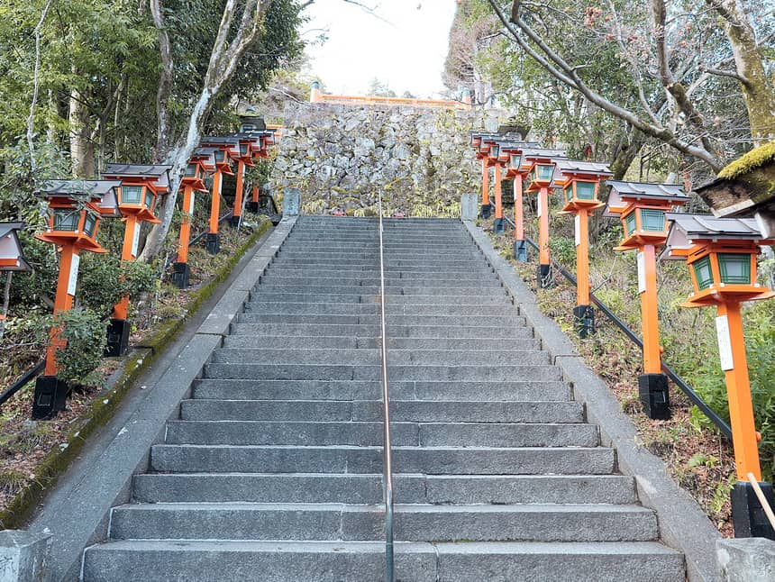
Hyppolyte de Saint-Rambert・CC BY 4.0・2024 年攝・Wikimedia Commons
2 人大眾運輸・京都車站出發
約 50 分本殿 → 貴船的山路（官網合計）
3～5 枚今日預計的御朱印
約 ¥1,920每人交通費（含巴士 ⚠️）
從京都車站搭 JR 與京阪轉叡山電車到鞍馬，搭纜車上山，走奧の院參道與木の根道，翻山到貴船神社，下午沿叡電回出町柳，順路參拜下鴨神社。觀光為主，御朱印順路收集。
先看這個：2027 年度的叡電、京阪、JR 時刻表都還沒公布。手冊裡的時間以現行最新版（叡電 2026/8/22 變更、京阪 2026/8/22、JR 2026/10/03 改正）推算，出發前請照最後一頁「待確認事項」再核對一次。
鞍馬・貴船一日手冊 鞍馬寺・貴船神社・下鴨神社2027/04/08（四）2 / 24
基旅行基本資訊 日期・時間・費用・圖例
| 日期 | 2027/04/08（週四，由日曆推算） |
|---|
| 人數・交通 | 2 人・大眾運輸（JR 奈良線、京阪、叡山電車、京都巴士 33、徒步） |
|---|
| 出發・結束 | 京都車站 07:40 出發，約 17:00 回到京都車站；原訂 19:00 結束，剩約 2 小時給晚餐與休息 |
|---|
| 住宿 | 京都車站周邊（當天回原出發地） |
|---|
| 今日特色 | - 鞍馬寺：纜車上山，金剛床，再走奧の院參道與木の根道翻山到貴船（本殿 → 貴船約 50 分，官網）
- 貴船神社「三社詣」：本宮、結社、奧宮，加上水占みくじ
- 叡山電車鞍馬線的山中風景；下午順路到下鴨神社與糺の森
|
|---|
| 預估花費 | 交通約 ¥1,920／人，愛山費 ¥500，纜車上行 ¥200，霊宝殿 ¥200（任意），御朱印約 ¥900～1,300，午餐另計（第 19 頁） |
|---|
| 事前預約 | 本路線沒有需要預約或有開賣日的項目 ⚠️（我逐項看過官網，未見預約制；午餐建議自己先訂位） |
|---|
| 時刻表狀態 | 2027 年度時刻表尚未公布。用的是現行版：叡電 2026/8/22 變更、京阪 2026/8/22、JR 西日本 2026/10/03 改正（查詢日 2026/10/08 木） |
|---|
| 查證日 | 2026/10/05。官方頁面以瀏覽器實際開啟為準 |
|---|
可信度圖例
| 標記 | 意思 | 怎麼用 |
|---|
| ✅ | 官方原文核實：真的開啟寺社、鐵道、巴士公司、市府或觀光協會的頁面看到 | 可以照著安排，但出發前仍要看最新公告 |
| 📷 | omairi.club 的真實訪客投稿，附投稿或參拜日期 | 用來判斷直書き／書置き、授與位置、限定御朱印；不是官方保證 |
| ⚠️ | 二手資料、轉乘網站、Google Maps 估算、我自己的推算 | 當參考，出發前再確認 |
旅遊日（週四）的公休與休運檢查
| 項目 | 4/8 週四的狀況 | 來源 |
|---|
| 鞍馬寺 | 官網未列定休日；霊宝殿週二休，週四有開 | ✅ |
| 鞍馬山ケーブル | 定期檢修日在官網「お知らせ」列的是 2026 年 7～10 月的上午停駛；2027 年的日程未公布 | ✅ |
| 貴船神社 | 年中無休（官網） | ✅ |
| 下鴨神社 | 定休日なし（官網）；河合社 16:30 閉門 | ✅ |
| 叡電「きらら」 | 時刻表備註標◆的班次「水曜日と木曜日の運行はございません」，週四只有沒標◆的班次 | ✅ |
| 料理旅館 ひろ文（貴船） | 官網寫「4月定休日：1日・8日・30日」，沒寫年份；2026 年 4/8 是週三，2027 年同日的公休未公布 | ✅ |
| JR／京阪／叡電 | 平日ダイヤ（週四）。沒有查到 4/8 的休運 | ⚠️ |
基出發前最需要再確認的 5 件事 ・日文地名對照
- 三家鐵道的 2027 年 4 月時刻：叡電 08:24 發（鞍馬 08:55）、京阪東福寺 07:58 發、JR 京都 07:40 發。都是現行版推算 ⚠️。
- 貴船本宮 4 月的參拜時間：官網只寫「6:00～20:00（5/1～11/30）」，冬期沒寫；10/04 的お知らせ顯示神社會依日期變更本宮參拜時間。授與所寫 9:00～17:00 ✅，但「時期によって変更」。
- 午餐：貴船 4 月沒有川床（5 月起），ひろ文官網的 4 月定休日列 1・8・30 日（年份未載），2027 年未公布。準備好備案（第 16 頁）。
- 山路與纜車：鞍馬寺的纜車有每月上午的檢修停駛；雨後木の根道會滑。出發前一晚看鞍馬寺「お知らせ」與貴船神社「お知らせ」。
- 御朱印的初穂料與限定：貴船的本宮與奧宮是 ¥300 還是 ¥500，投稿與舊部落格不一致；「春の特別ご朱印めぐり」2027 年是否舉辦也未公布（2026 年是 2/4～4/30，含由岐神社、貴船神社、下鴨神社）。
日文地名對照（貼進 Google Maps 搜尋）
| 地點 | 日文原名 | 讀音 | 用途 |
|---|
| 京都車站 | 京都駅 | きょうとえき | 出發 |
| 東福寺站 | 東福寺駅 | とうふくじえき | JR 與京阪轉乘 |
| 出町柳站 | 出町柳駅 | でまちやなぎえき | 叡電起點 |
| 鞍馬站 | 鞍馬駅 | くらまえき | 叡電終點 |
| 貴船口站 | 貴船口駅 | きぶねぐちえき | 回程上車 |
| 鞍馬寺 仁王門 | 鞍馬寺 仁王門 | くらまでら におうもん | 山門，付愛山費 |
| 纜車（山門駅） | 鞍馬山ケーブル 山門駅（普明殿） | さんもんえき（ふみょうでん） | 上山 |
| 本殿金堂・金剛床 | 本殿金堂・金剛床 | ほんでんこんどう・こんごうしょう | 鞍馬寺中心 |
| 霊宝殿 | 霊宝殿（鞍馬山博物館） | れいほうでん | 任意 |
| 魔王殿・木の根道 | 魔王殿・木の根道 | まおうでん・きのねみち | 奥の院參道 |
| 西門 | 鞍馬寺 西門 | にしもん | 往貴船的出口 |
| 貴船神社 | 貴船神社 本宮・結社・奥宮 | きふねじんじゃ ほんぐう・ゆいのやしろ・おくみや | 三社詣 |
| 水占みくじ | 水占みくじ | みずうらみくじ | 本宮 |
| 下鴨神社・河合神社 | 賀茂御祖神社（下鴨神社）・河合神社 | かもみおやじんじゃ・かわいじんじゃ | 回程順路 |
| 糺の森 | 糺の森 | ただすのもり | 參道的森 |
行今日行程總覽 時間｜地點｜行程｜交通｜停留
| 時間 | 地點 | 行程 | 交通 | 停留 |
|---|
| 07:40 | 京都駅 | JR 奈良線（宇治行）到東福寺 | JR 3 分 | — |
| 07:58 | 東福寺 | 轉京阪（出町柳行） | 京阪 約 15 分 | 轉乘 15 分 |
| 08:24 | 出町柳 | 轉叡電鞍馬線（3 番線） | 叡電 31 分 | 轉乘 11 分 |
| 08:55 | 鞍馬 | 步行 3 分到仁王門付愛山費，再走 2 分到纜車山門駅 | 徒步 | 5 分 |
| 09:20 | 山門駅 | 搭纜車上山（2 分，¥200）；09:00 班趕不上 | 纜車，每 20 分 ⚠️ | 等車約 18 分 |
| 09:32 | 本殿金堂 | 金剛床、展望、御朱印「尊天」 | 多宝塔駅步行 10 分 | 30 分 |
| 10:04 | 霊宝殿 | 任意（週四開館） | 徒步 2 分 | 20 分 |
| 10:52 | 魔王殿 | 奥の院參道、木の根道、背比べ石 | 徒步 28 分 ⚠️ | 15 分 |
| 11:27 | 貴船神社 本宮 | 水占みくじ、御朱印 | 西門經過，徒步 20 分 | 30 分 |
| 11:57 | 午餐 | 貴船（備案：自備） | — | 70 分 |
| 13:22 | 奥宮・結社 | 三社詣，奧宮御朱印書置き | 徒步 15 分＋7 分 | 30 分 |
| 14:21 | 貴船バス停 | 京都巴士 33 到貴船口（7 分） | 巴士，班次 ⚠️ | 等車 10 分 ⚠️ |
| 14:36 | 貴船口 | 叡電回出町柳（29 分，週四可搭的きらら） | 叡電 | 緩衝 8 分 |
| 15:17 | 下鴨神社 | 糺の森、河合神社、御朱印 | 出町柳徒步 12 分 | 63 分 |
| 16:40 | 出町柳 | 京阪到七条，徒步到京都駅 | 京阪 7 分＋徒步 13 分 | — |
| 17:00 | 京都駅 | 回到出發地，晚餐 | — | 約 2 小時緩衝 |
今天的時間界線
| 項目 | 界線 | 來源 | 我們的安排 |
|---|
| 叡電 出町柳 → 鞍馬 | 平日 07:11、07:37、08:02、08:24、08:45、09:00、之後每 15 分；末班 22:30 | ✅ | 08:24 發，11 分緩衝；趕不上搭 08:45（鞍馬 09:16） |
| 叡電 貴船口 → 出町柳 | 14:06、14:21、14:36、14:51、15:06；末班 23:06 | ✅ | 14:36 發（週四可搭的きらら），緩衝 8 分；趕不上搭 14:51 |
| 鞍馬寺 本殿 | 開扉 9:00～16:15 | ✅ | 09:32 到，不緊 |
| 鞍馬山ケーブル | 山門駅上行 8:40 起、末班上行 16:20（本殿已閉）、下行末班 16:25；每 20 分 | ✅ | 主案上行搭 09:20 班（每 20 分的推算 ⚠️），下行不搭 |
| 霊宝殿 | 9:00～16:00，週二休，12/12～2 月底休 | ✅ | 10:04 入館 |
| 鞍馬寺 御朱印 | 官網未載；舊部落格寫 9:00～16:00（另一說 16:30） | ⚠️ | 09:32～10:02 領 |
| 貴船本宮 授與所 | 9:00～17:00（時期によって変更） | ✅ | 11:27 到 |
| 貴船本宮 參拜 | 5/1～11/30 為 6:00～20:00；4 月未載明 | ✅ | 請查「お知らせ」 |
| 下鴨神社 | 楼門內 6:30～17:00；河合社 6:30～16:30；御朱印授與時間未載明 | ✅ | 15:17 到，16:20 離開，河合社先走 |
| 京阪 出町柳 → 七条 | 16～17 時台每小時約 10 班 | ✅ | 16:40 發 |
行今日路線地圖 為什麼這樣走
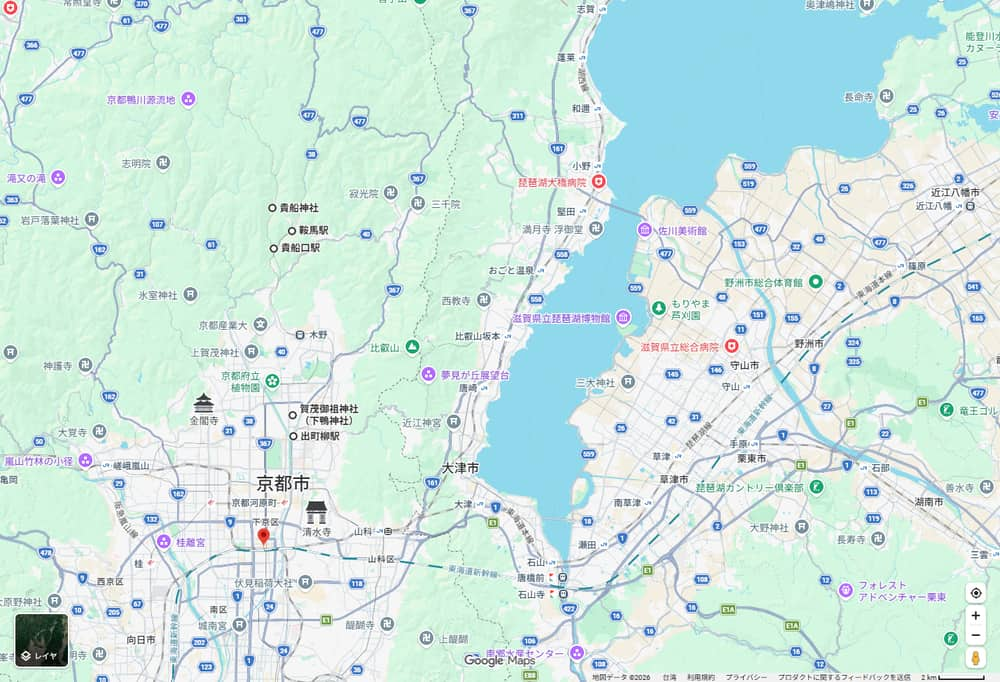
京都車站（紅標）、出町柳、下鴨神社、鞍馬、貴船神社、貴船口的相對位置・Google Maps 截圖・地圖資料 ©2026 Google・截取日期 2026/10/05
京都駅▶出町柳▶鞍馬▶纜車▶本殿金堂▶魔王殿▶貴船 本宮▶奥宮・結社▶貴船口▶出町柳▶下鴨神社▶京都駅
示意圖，非地理比例。
為什麼這樣走最順
- 叡電鞍馬線是由南往北的單線，鞍馬是終點；從鞍馬翻山到貴船是單向，不折返。鞍馬寺官網的路線：鞍馬駅 → 山門 3 分 → 普明殿（纜車山門駅）2 分 → 纜車 2 分 → 本殿金堂 10 分 → 魔王殿 30 分 → 貴船神社 20 分 ✅。
- 貴船口站在回程叡電上，不用再回鞍馬。
- 下鴨神社離出町柳走路 12 分 ✅，放在回程最後，早上去的話會多繞一段且太早。
順路加入的
- 纜車：省下九十九折的上坡（Google：仁王門 → 由岐神社上 59 m、由岐神社 → 本殿上 90 m ⚠️）。
- 霊宝殿：本殿左側 2 分（官網）。
- 貴船結社：本宮往奧宮的路上。
- 下鴨神社：回程出出町柳就到。
值得去但這天不排的
| 地點 | 為什麼不排 |
|---|
| 大原（三千院・寂光院） | 另一條山谷，要換巴士，會多出約 1 小時；與今天的鞍馬・貴船是不同方向 |
| 八瀬・瑠璃光院 | 在叡電本線的另一條支線，方向相反 |
| 鞍馬溫泉 | 鞍馬站旁，時間和費用我沒有查證；如果想泡，要犧牲下鴨神社 |
| 由岐神社・九十九折參道 | 你決定搭纜車上山；由岐神社在步行參道上，纜車繞過它，要去只能從仁王門走 5 分往返。等纜車的 18 分鐘如果改變主意，可以走去看（官網） |
| 一乘寺拉麵 | 要在叡電中途下車再上車，會破壞回程的班次節奏 |
反向走法（貴船 → 鞍馬）的比較
| 主案：鞍馬 → 貴船 | 反向：貴船 → 鞍馬 |
|---|
| 優點 | 纜車上山省力，下午走平路；午餐在貴船，時間順；末班叡電不趕 | 貴船本宮 9:00 一開就到，人少；下山可以走參道或搭纜車；終點在鞍馬站，可泡溫泉 |
| 缺點 | 貴船本宮在中午前後，遊客較多 | 西門側是上坡；午餐難排（鞍馬站前的店我沒有查證）；兩處授與所都集中在上午 |
| 結論 | 推薦 | 體力好、想早點拍貴船時才選 |
行區段地圖 鞍馬寺・貴船・下鴨
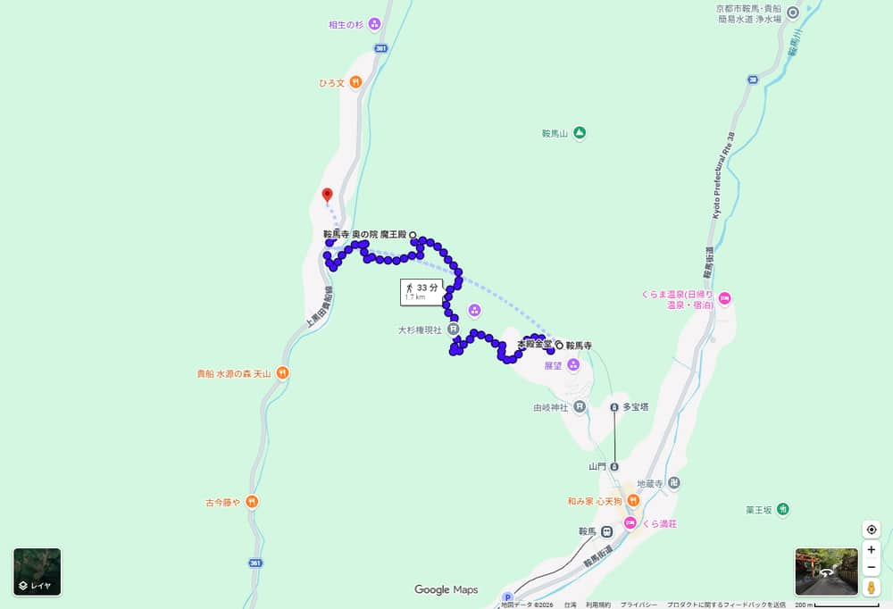
本殿金堂 → 魔王殿 → 西門 → 貴船本宮（上山段改搭纜車，不在圖上）・Google Maps 截圖・地圖資料 ©2026 Google・截取日期 2026/10/05
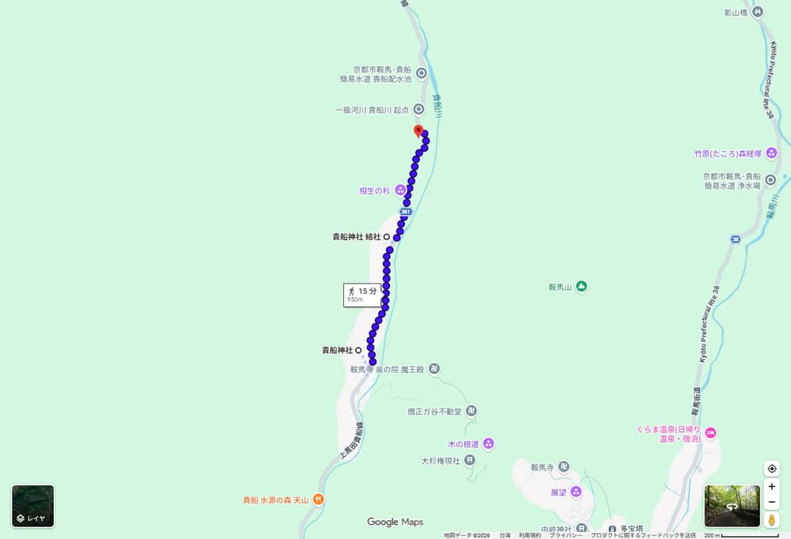
貴船本宮 → 結社 → 奧宮（單程 950 m）・Google Maps 截圖・地圖資料 ©2026 Google・截取日期 2026/10/05
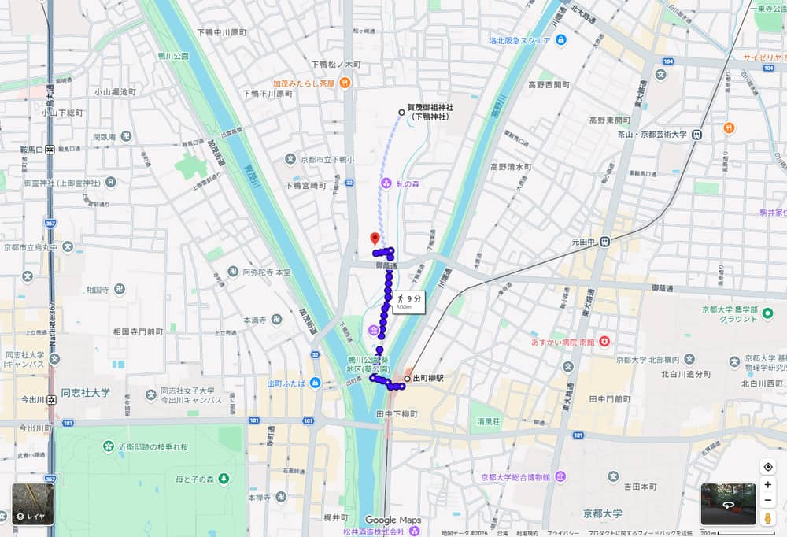
出町柳 → 下鴨神社 → 河合神社・Google Maps 截圖・地圖資料 ©2026 Google・截取日期 2026/10/05
| 區段 | Google Maps 步行 | 官方／其他數字 | 連結 |
|---|
| 鞍馬駅 → 仁王門 | 4 分・210 m | 官網 3 分 ✅ | 導航 |
| 仁王門 → 纜車山門駅 | 2 分・68 m | 官網 2 分 ✅ | 導航 |
| 纜車 山門駅 → 多宝塔駅 | — | 官網 2 分，¥200 ✅ | — |
| 多宝塔駅 → 本殿金堂 | 9 分・400 m（上 59 m） | 官網 10 分 ✅ | 導航 |
| 本殿金堂 → 魔王殿 | 20 分・1.0 km | 官網 30 分 ✅ | 導航 |
| 魔王殿 → 西門 | 12 分・550 m | — | 導航 |
| 西門 → 貴船本宮 | 1 分・58 m | 官網（魔王殿から貴船神社まで）20 分 ✅ | 導航 |
| 本宮 → 結社 → 奧宮 | 8 分＋7 分・約 950 m | omairi：本宮から約 15 分 📷（2026/07/19） | 導航 |
| 貴船 → 貴船口 | 步行 19 分・1.6 km（下 85 m） | 官網 約 30 分（2 km）✅ | 導航 |
| 出町柳駅 → 下鴨神社 | 7～10 分・500～700 m | 官網 12 分 ✅ | 導航 |
| 七条駅 → 京都駅 | 13 分・900 m | — | 導航 |
Google Maps 的步行時間是估算，不含參拜、拍照與排隊。官網的數字比較保守，行程用官網的。
鞍馬・貴船一日手冊 鞍馬寺・貴船神社・下鴨神社2027/04/08（四）7 / 24
行交通總覽 每段的時間、費用與注意
| 區段 | 工具 | 時間 | 轉乘 | 費用 | 注意 | 來源 | 導航 |
|---|
| 京都 → 東福寺 | JR 奈良線 07:40 發（宇治行，8 番線） | 3 分 | 1 | ¥150 | 7:55 發（9 番線）是備案 | ✅時刻・⚠️運賃 | 導航 |
| 東福寺 → 出町柳 | 京阪 07:58 發 | 約 15 分 | — | ¥300 | JR 轉京阪的東福寺轉乘，07:43 到、07:58 發，有 15 分緩衝 | ✅時刻・運賃・⚠️時間 | 導航 |
| 出町柳 → 鞍馬 | 叡電鞍馬線 08:24 發（3 番線） | 31 分 | 轉乘 11 分 | ¥470 | 看「鞍馬行」，不是八瀬比叡山口行 | ✅ | 導航 |
| 貴船 → 貴船口 | 京都巴士 33 系統 | 約 7 分 | — | 約 ¥230 | 均一區間，IC 下車時刷 1 次；班次未取得 | ✅均一區間・⚠️金額與班次 | 導航 |
| 貴船口 → 出町柳 | 叡電 14:51 發 | 約 29 分 | — | ¥470 | 14:36 發的班次是週四可搭的きらら | ✅ | 導航 |
| 出町柳 → 七条 | 京阪 16:44 發 | 約 7 分 | — | ¥300 | 要看車身停靠站 | ✅運賃・⚠️時間 | 導航 |
| 七条 → 京都駅 | 徒步 | 13 分・900 m | — | — | 也可搭 JR 或地鐵，不如走路 | ⚠️ | 導航 |
京都駅 → 鞍馬的走法比較
| 方式 | 時間 | 費用 | 轉乘 | 徒步量 | 便利性 |
|---|
| A：JR 奈良線 → 京阪 → 叡電（主案） | 07:40 → 08:55（75 分） | ¥920 | 2 次 | 東福寺、出町柳各轉乘一次 | 每一段都有官網時刻表可對；轉乘各一次（東福寺、出町柳） |
| B：地鐵烏丸線 → 市バス 3 → 叡電 | 08:10 → 09:16（66 分） | ¥920 | 2 次 | 四條站換巴士約 3 分 | 搭 08:45 叡電；巴士在市區塞車時會慢 ⚠️ |
| C：地鐵到國際會館 → 京都巴士 52 到鞍馬 | 官網：巴士約 25 分 | 地鐵＋巴士 ⚠️ | 1 次 | 少 | 鞍馬寺官網列為選項；6 月公告顯示這條巴士曾改道 ⚠️ |
A、B 的時間與金額來自 Yahoo!乘換案內與 Google Maps ⚠️；C 的巴士時間是鞍馬寺官網寫的「（２５分）」✅。選 A 是因為每一段都有官網時刻表可對。
一日券判斷：不建議買
| 票券 | 價格 | 能不能用在這條路線 |
|---|
| 地下鉄＆えいでん 鞍馬・貴船日帰りきっぷ | ¥2,100 | 京阪只含三條～出町柳、叡電全線、地鐵全線；不含 JR 與京都巴士。有效期 2026/4/1～2027/3/31，2027/4/8 能不能用未確認 ⚠️✅ |
| 叡山電車・京阪電車 1日乗車券 | ¥2,100 | 只在 Surutto QRtto 販售，需註冊與信用卡；有效期同樣只到 2027/3/31 ✅ |
算給你看：單買 JR ¥150 ＋ 京阪 ¥300 ＋ 叡電 ¥470（去）＋ 叡電 ¥470 ＋ 京阪 ¥300（回）＋ 巴士 ¥230 ＝ ¥1,920／人，一日券 ¥2,100 還貴 ¥180，而且巴士不能用。用 ICOCA 等交通 IC 卡就好（京都巴士 33 收 IC ✅）。
鞍馬・貴船一日手冊 鞍馬寺・貴船神社・下鴨神社2027/04/08（四）8 / 24
行特殊交通 叡電鞍馬線・きらら・鞍馬山ケーブル・巴士 33
叡電鞍馬線（出町柳 ⇄ 鞍馬）
| 項目 | 內容 | 來源 |
|---|
| 時間・運賃 | 出町柳 → 鞍馬 31 分，→ 貴船口 28 分；鞍馬 → 貴船口 2 分。普通運賃 出町柳～鞍馬 ¥470、～貴船口 ¥470（2023/4/1 版運賃表） | ✅ |
| 出町柳發 往鞍馬（平日） | 7:11、7:37、8:02、8:24、8:45；9～16 時台每 :00、:15、:30、:45；17 時台 17:01、17:25、17:49；18 時台 18:13、18:37。08:24 發的鞍馬行在 3 番線（時刻表標記；9:30 等少數班次標 2 番線） | ✅ |
| 貴船口發 往出町柳（平日） | 13～16 時台每小時 :06、:21、:36、:51；17 時台 17:06、17:22、17:46；18 時台 18:09、18:33、18:57；末班 23:06 | ✅ |
| 鞍馬發 往出町柳（平日） | 9～16 時台每小時 :04、:19、:34、:49 | ✅ |
| 注意 | 時刻表標「行楽シーズン等は発車時刻を変更する場合があります」；版本 2026/8/22 變更 | ✅ |
| 列車運行情報 | 叡電官網首頁有「列車運行情報」，出發前與在站上都可看 | ✅ |
展望列車「きらら」：週四只有部分班次
- 官網介紹：大片玻璃窗，車廂中央 8 個座位朝向窗外；特別推薦二軒茶屋～鞍馬間，尤其市原～二ノ瀬的「もみじのトンネル」，春到夏是青もみじ ✅。
- 時刻表備註：「◆印がついてる列車は、水曜日と木曜日の運行はございません」✅。4/8 是週四，所以有◆的班次不開。
- 週四可搭（沒標◆）：出町柳發往鞍馬 10:15、11:30、12:45、14:00、15:15、16:30；鞍馬發往出町柳 10:49、12:04、13:19、14:34、15:49、17:04；貴船口發的時間是鞍馬發後 2 分，例如 14:36、15:51 ✅（2026/8/22 版）。
- 主案的去程（08:24）不是きらら；回程排在貴船口 14:36 發的きらら（週四可搭），15:05 到出町柳；趕不上就搭 14:51 的一般班次（15:20 到）。
鞍馬山ケーブル（山門駅 ⇄ 多宝塔駅）
| 項目 | 內容 | 來源 |
|---|
| 時間 | 山門駅上行 8:40 起、多宝塔駅下行 8:45 起；上行末班 16:20（官網寫「これで上ると本殿は、閉っています」），下行末班 16:25（1～5 月、9～12 月）；每 20 分一班；乘車 2 分 | ✅ |
| 費用 | 大人單程 ¥200、小學生以下 ¥100，官網稱是「寄進」，不是運賃 | ✅ |
| 停駛 | 「お知らせ」列出 2026 年 7/27、8/27、9/25、10/27 的上午定期檢修；2026/8/30～31 因故障臨時停駛。2027 年 4 月的日程未公布 | ✅ |
| 怎麼用 | 主案：08:58 付完愛山費，走 2 分到山門駅，搭 09:20 班上行（每 20 分一班是從 8:40 與末班 16:20 推算，我沒有看到完整時刻表 ⚠️）；09:00 班只有 2 分緩衝，趕不上就等 09:20。下行不搭，走奧の院參道到貴船。付款方式官網未載 | ⚠️ |
| 山門駅 | 普明殿，供奉毘沙門天立像；仁王門步行 2 分；旁邊有洗手間（鳥樞沙摩明王殿） | ✅ |
京都巴士 33 系統（叡電貴船口駅前 ⇄ 貴船）
- 約 7 分，貴船巴士站再走約 5 分到貴船神社 ✅（貴船神社官網、京都観光 Navi）。
- 京都巴士官網：33 系統（叡電貴船口駅前～貴船）是均一區間，降車時 IC 刷 1 次 ✅。運賃表（2026/3/20 實施）的京都市均一區間是 ¥230，所以推算 ¥230 ⚠️。
- 班次：貴船神社官網的 33 系統時刻表連結已失效，我沒有取得；官網的步行備案是貴船口 → 貴船神社約 30 分（2 km）✅。行程用「等車 10 分」估算 ⚠️。
風險：叡電與巴士在櫻花季、假日會增班或改時；2026/6 的豪雨公告顯示京都巴士 32、52 曾改道，叡電與鞍馬寺照常。出發前看叡電「列車運行情報」與京都巴士公告。
鞍馬・貴船一日手冊 鞍馬寺・貴船神社・下鴨神社2027/04/08（四）9 / 24
行出發段落 京都駅 → 東福寺 → 出町柳 → 鞍馬
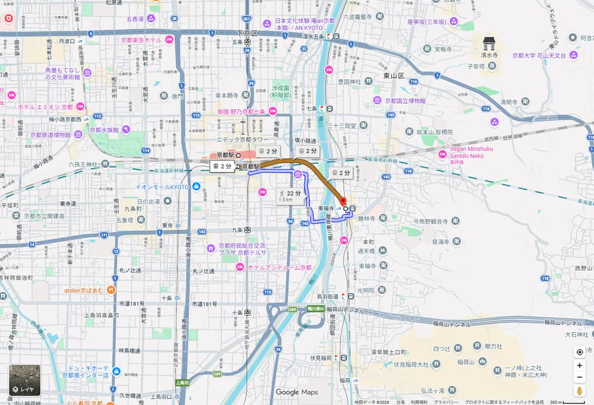
JR 京都駅 → 東福寺・Google Maps 截圖・地圖資料 ©2026 Google・截取日期 2026/10/05
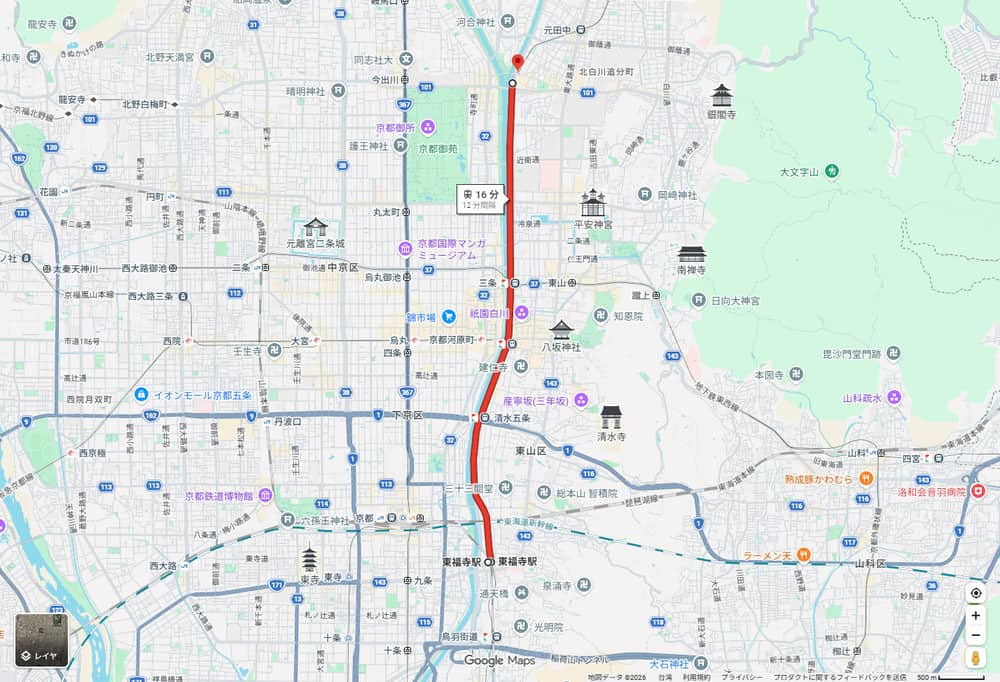
京阪 東福寺 → 出町柳・Google Maps 截圖・地圖資料 ©2026 Google・截取日期 2026/10/05
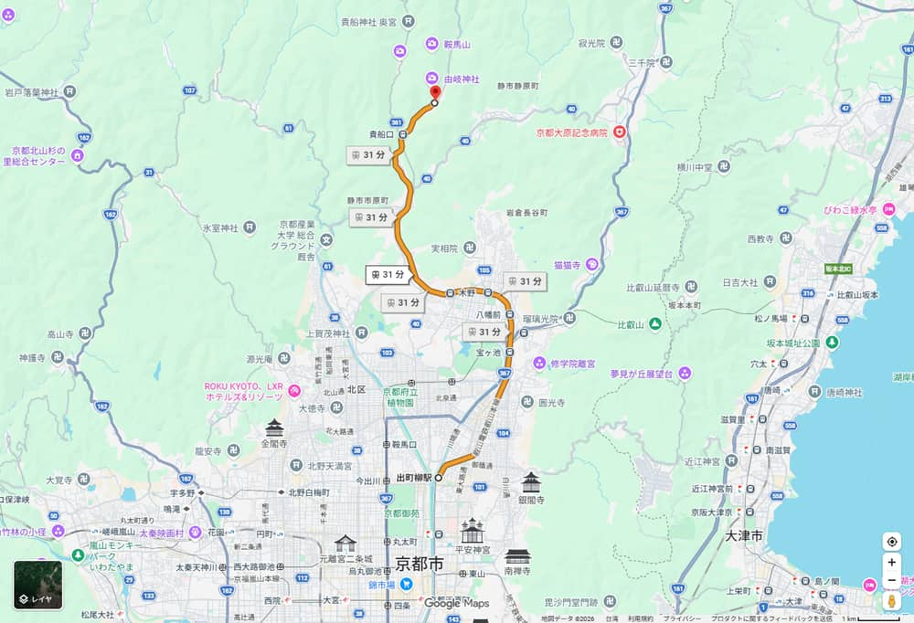
叡電 出町柳 → 鞍馬・Google Maps 截圖・地圖資料 ©2026 Google・截取日期 2026/10/05
| 時間 | 站 | 動作 | 時間來源 |
|---|
| 07:40 | 京都駅 8 番線 | JR 奈良線 普通 宇治行 → 07:43 東福寺（乘車 3 分） | ✅時刻（JR 西日本，查詢 2026/10/08 木）・⚠️乘車時間 |
| 07:43～07:58 | 東福寺 | 走到京阪東福寺站，搭 1 番線（三條・出町柳方面） | ✅月台・⚠️轉乘步行 |
| 07:58 | 京阪 東福寺 | 搭出町柳行，約 15 分到出町柳（08:13） | ✅時刻（20260822 版）・⚠️乘車時間 |
| 08:13～08:24 | 出町柳 | 轉乘叡電，到 3 番線找「鞍馬」行 | ⚠️轉乘 |
| 08:24 | 叡電 出町柳 | 鞍馬行，31 分 → 08:55 鞍馬 | ✅ |
怎麼認車
- 叡電從出町柳出發的車有兩種：「鞍馬」行與「八瀬比叡山口」行，交互發車，看車頭與月台的行先牌。平日 8～9 時台 鞍馬行是 8:02、8:24、8:45、9:00。
- 京阪從東福寺到出町柳，月台寫「三條・出町柳方面」。我只看過時刻表，沒有查到各班的停靠站，上車前看車身的種別與行先。
- 叡電可以刷交通 IC 卡。京阪與叡電的出町柳站是兩個站，轉乘要出閘再進閘，步行時間我沒有量 ⚠️；所以預留 11 分緩衝。
如果趕不上
| 情況 | 做法 | 結果 |
|---|
| 沒搭上 JR 07:40 | 搭 07:55（9 番線，普通奈良行）→ 07:58 東福寺 → 京阪 08:05 → 08:20 出町柳 | 叡電 08:24 只剩 4 分轉乘，很緊 ⚠️；沒趕上就搭 08:45 |
| 沒搭上京阪 07:58 | 搭京阪 08:05（→ 08:20）或 08:11（→ 08:24 或 08:27） | 同上 |
| 沒搭上叡電 08:24 | 搭 08:45 → 09:16 鞍馬 | 09:16 到鞍馬、纜車改搭 09:40 班，全天順延約 20 分，刪霊宝殿（第 20 頁） |
| 整段延誤 | 改搭地鐵烏丸線＋市バス（第 7 頁 B 方案） | 約 09:16 到鞍馬 ⚠️ |
為什麼 07:40 出發：叡電 08:24 發車、08:55 到鞍馬，搭 09:20 的纜車、09:32 到本殿，在 9:00 開扉之後，且有 11 分的轉乘緩衝。07:00 出發不會更早進得了寺，因為本殿 9:00 才開 ✅。
鞍馬・貴船一日手冊 鞍馬寺・貴船神社・下鴨神社2027/04/08（四）10 / 24
観鞍馬寺 簡介與基本資訊
為什麼推薦
鞍馬寺是這天最重要的景點。從山麓走到山上的本殿，再沿奧の院參道翻山到貴船，沿路是義經少年時代的傳說、金剛床、木の根道，風景與體驗都集中在這一條路上。觀光價值 S，御朱印價值 A。
簡介
鞍馬弘教的總本山。本殿金堂供奉千手観音、毘沙門天王、護法魔王尊，三位合稱「尊天」；本尊是秘佛，60 年一次、丙寅年才開扉 ✅（官網「山内案内」）。整座山被視為尊天的身體，所以愛山費用來維護山林與參道，參道保持土路，倒木盡量不動 ✅。
| 地址・電話 | 京都市左京区鞍馬本町 1074・075-741-2003 ✅ |
|---|
| 開放 | 本殿開扉 9:00～16:15 ✅；山門的入山時間官網未載明 |
|---|
| 愛山費 | ¥500（令和 5 年 4 月 1 日起）✅；用於清掃山林、綠化與整理參道 |
|---|
| 纜車 | 單程 ¥200（寄進），上行 8:40 起、末班 16:20 ✅ |
|---|
| 霊宝殿 | ¥200，9:00～16:00，週二休（祝日則翌日），12/12～2 月底休 ✅ |
|---|
| 其他 | 寵物可入山，但不能搭纜車與進殿 ✅；山內多處有洗手間；轉法輪堂一樓「洗心亭」是免費休息所 ✅ |
|---|
| 離上一點 | 鞍馬駅步行 3 分到仁王門 ✅ |
|---|
景區總覽
| 區域 | 內容 | 時間 | 另收費 | 本行程 |
|---|
| 山麓 | 仁王門（明治 44 年再建，左側門扉是壽永年間 1182～84 的）、鳥樞沙摩明王殿（洗手間） | 仁王門前 3 分 | 愛山費 ¥500 | 必經 |
| 普明殿（纜車山門駅） | 毘沙門天立像；纜車 2 分到多宝塔駅，上行 8:40 起 | 仁王門 → 2 分 | 纜車 ¥200 | 搭上行 |
| 由岐神社 | 鎮守社，拝殿是重要文化財；在步行參道上 | 仁王門 → 5 分 | — | 不排 |
| 九十九折參道 | 中門、巽の弁財天社、轉法輪堂（洗心亭）；纜車路線與它在轉法輪堂附近會合 | 多宝塔駅 → 本殿 10 分 | — | 纜車代替 |
| 本殿金堂 | 金剛床、閼伽井護法善神社、光明心殿、本坊 | 參拜 30 分 | — | 必看 |
| 霊宝殿 | 三層：自然科學博物苑、寺寶展、與謝野晶子・寛紀念室、佛像奉安室（毘沙門天三尊像為國寶） | 20 分 | ¥200 | 任意 |
| 奥の院參道 | 息つぎの水、背比べ石、木の根道、大杉權現社、不動堂、義經堂、魔王殿 | 本殿 → 魔王殿 30 分 | — | 必走 |
| 西門 | 往貴船的出口 | 魔王殿 → 貴船神社 20 分 | — | 必經 |
內部配置請看鞍馬寺官網「山内案内図」，我沒有自己畫。鞍馬寺 山内案内
鞍馬・貴船一日手冊 鞍馬寺・貴船神社・下鴨神社2027/04/08（四）11 / 24
観鞍馬寺 參觀路線與時間不夠時
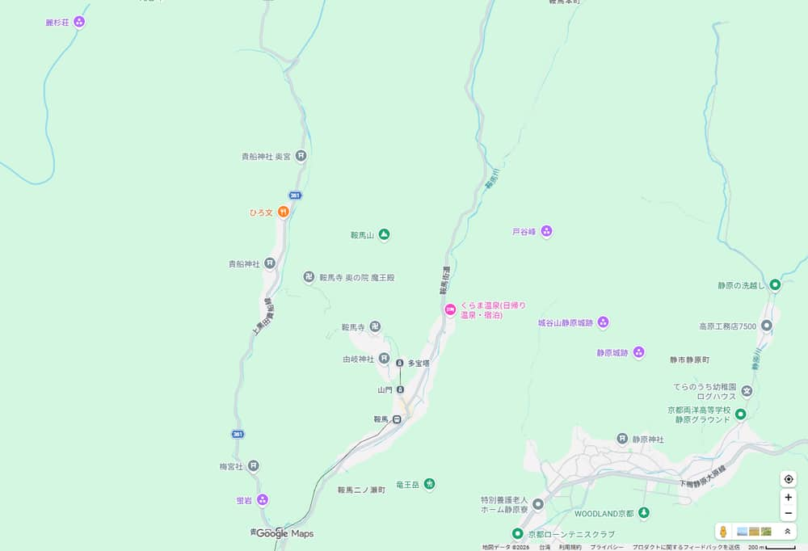
鞍馬駅、鞍馬寺、貴船神社一帶的位置（無路線線）・Google Maps 截圖・地圖資料 ©2026 Google・截取日期 2026/10/05
主案：纜車上山，走奧の院參道到貴船
| 順序 | 區段 | 官網 | Google | 備註 |
|---|
| 1 | 鞍馬駅 → 仁王門 | 3 分 ✅ | 4 分 ⚠️ | 付愛山費 ¥500 |
| 2 | 仁王門 → 纜車山門駅（普明殿） | 2 分 ✅ | 2 分 ⚠️ | 09:00 班趕不上，等 09:20 班（約 18 分） |
| 3 | 山門駅 → 多宝塔駅 | 纜車 2 分，¥200 ✅ | — | 每 20 分一班（推算 ⚠️） |
| 4 | 多宝塔駅 → 本殿金堂 | 10 分 ✅ | 9 分，上 59 m ⚠️ | 途中與九十九折參道會合，經轉法輪堂（洗心亭） |
| 5 | 本殿金堂 → 霊宝殿 | 2 分 ✅ | 4 分 ⚠️ | 任意，20 分 |
| 6 | 霊宝殿 → 魔王殿 | 本殿 → 魔王殿 30 分 ✅ | 16 分 ⚠️ | 行程用 28 分（30 分扣掉 2 分） |
| 7 | 魔王殿 → 貴船神社 | 20 分 ✅ | 西門 12 分＋西門 → 本宮 1 分 ⚠️ | 西門出來就是貴船本宮 |
步行合計：鞍馬駅 → 本殿金堂 3＋2＋10 ＝ 15 分（加纜車 2 分），本殿 → 貴船神社 30＋20 ＝ 50 分（官網）。這是官網「纜車コース」加上「奧の院參道 → 西門 → 貴船」的組合。
只剩 60 分鐘怎麼走
- 仁王門 → 山門駅 2 分 → 纜車 2 分 → 多宝塔駅 → 本殿金堂 10 分 ✅，約 15 分到。
- 在本殿金堂、金剛床與領御朱印停 20 分。
- 原路搭纜車下山（上行末班 16:20，下行末班 16:25）。
- 之後走叡電到貴船口，搭巴士到貴船（第 20 頁雨天版）。
時間充裕怎麼加
- 霊宝殿（¥200，二樓與謝野晶子紀念室，三樓佛像奉安室）。
- 洗心亭免費休息；義經堂、僧正ガ谷是牛若丸向天狗學兵法的傳說地。
- 在本殿前的展望處看山，再走奧の院參道。
- 等纜車的 18 分鐘：改變主意的話，可以走 5 分到由岐神社（往返約 10 分）。鞍馬溫泉我沒有查證，不列入。
為什麼這樣走：纜車省下九十九折的上坡（官網 20 分，Google 上 90 m ⚠️），體力留給奧の院參道與木の根道。代價是等纜車約 18 分鐘（09:00 班要 08:58 就到山門駅，我算 09:02 到，所以排 09:20），以及看不到由岐神社與九十九折參道。纜車上行是「寄進」¥200，不是運賃 ✅。
路況與安全
- 參道是土路，倒木盡量不動；木の根道雨後濕滑，穿防滑鞋。
- 2026/6/27 的豪雨公告：鞍馬寺照常，木の根道可通行 ✅（京都観光 Navi）。出發前看鞍馬寺「お知らせ」。
- 纜車有每月上午的檢修停駛（2026 年 7～10 月已公布，2027 年 4 月未公布）；停駛時就走九十九折：仁王門 → 由岐神社 5 分、→ 本殿 20 分（官網 ✅），比纜車的 2＋2＋10 分多約 11 分，但不用等車。
- 16:15 本殿閉，山內不要拖到傍晚。
鞍馬・貴船一日手冊 鞍馬寺・貴船神社・下鴨神社2027/04/08（四）12 / 24
観本殿金堂・金剛床 鞍馬寺の中心
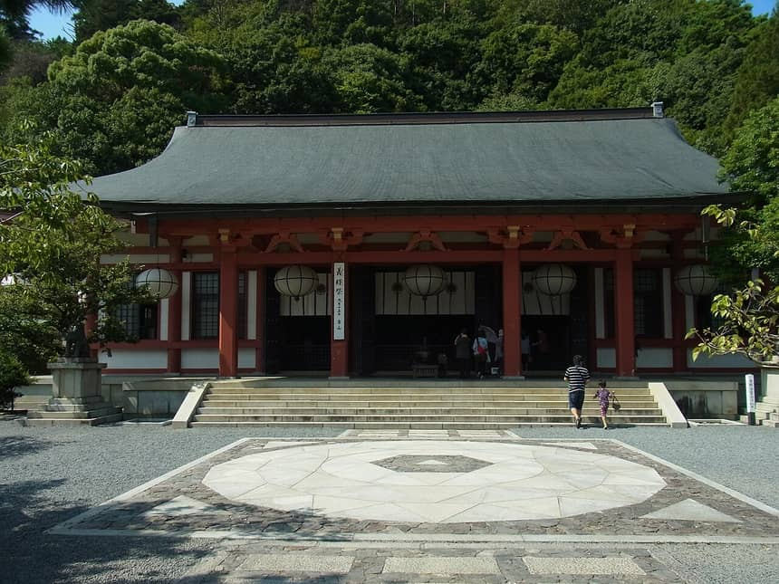
Nankou Oronain (as36…・CC BY-SA 3.0・2011 年攝・Wikimedia Commons・金剛床（前景圓形圖案）與本殿金堂
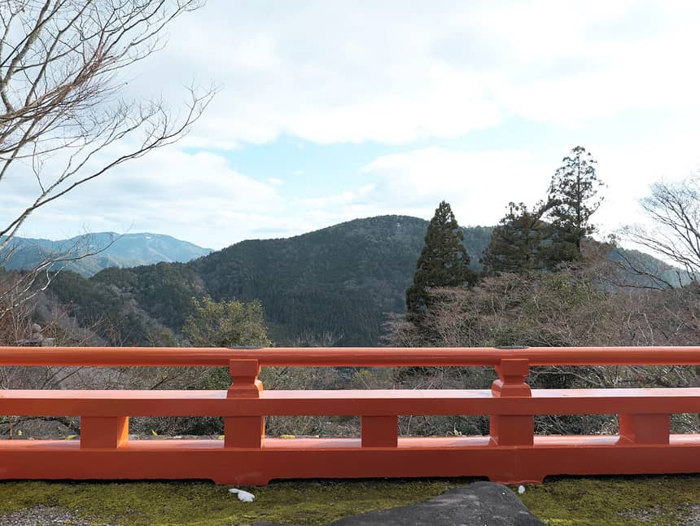
Hyppolyte de Saint-Rambert・CC BY 4.0・2024 年攝・Wikimedia Commons・本殿附近的山景
為什麼推薦
纜車與參道會合之後的終點，也是整座山的中心。前面的「金剛床」是星曼荼羅的圖形，官網說是人與尊天合一的修行場；本殿的虎是毘沙門天的使者。觀光價值 S，御朱印價值 A（「尊天」直書き，有寅の日的印）。
簡介
本殿金堂供奉千手観音菩薩、毘沙門天王、護法魔王尊，合稱「尊天」，本尊是秘佛，60 年一次開扉。前面的「阿吽の虎」取代一般的狛犬，因為毘沙門天出現在寅月、寅日、寅刻 ✅。金剛床模擬星曼荼羅 ✅。本殿地下是宝殿，供奉信徒的清浄髪 ✅。
現場看什麼
- 金剛床：站在中央正面拍，再看本殿
- 阿吽の虎：左右一對，不是獅子
- 展望：本殿旁的山谷視野
- 閼伽井護法善神社（水神，本殿東側）與光明心殿（護法魔王尊，本殿西側）
- 本坊的前庭「瑞風庭」，象徵魔王尊降臨奧の院
| 停留 | 30 分（含御朱印） |
|---|
| 離上一點 | 纜車多宝塔駅 → 本殿金堂 步行 10 分 ✅（Google 9 分，上 59 m ⚠️）；纜車山門駅 → 多宝塔駅 2 分，¥200 ✅ |
|---|
| 開放 | 本殿開扉 9:00～16:15 ✅；御朱印時間官網未載明，舊部落格 9:00～16:00（另一說 16:30）⚠️ |
|---|
| 地址 | 京都市左京区鞍馬本町 1074 ✅ |
|---|
御朱印
| 項目 | 內容 | 來源 |
|---|
| 種類 | 「尊天」，御本尊三尊一體的墨書；有些日子會蓋「寅の日」的印 | 📷2026/09/06、2026/08/27、2026/04/05、2025/12/27 |
| 形式 | 直書き，可寫進御朱印帳；也有人用毘沙門天用的帳。記念版另有書置き | 📷 |
| 授與位置 | 本殿金堂內的納經所（「本堂の朱印所」） | 📷・⚠️舊部落格 |
| 初穂料 | 通常版 ¥300（冥加料）；記念版是年度限定 | ⚠️ |
| 御朱印帳 | 鞍馬寺原版：¥2,000（舊部落格，含御朱印）與 ¥3,000（じゃらん）兩說，無法確認 | ⚠️（兩處矛盾，並列） |
| 推薦程度 | ★★★★★ 寺院本身與御朱印都值得 | — |
霊宝殿（任意）
本殿左側走 2 分。一樓是鞍馬山自然科學博物苑，二樓是寺寶展與與謝野晶子・寛紀念室，三樓是佛像奉安室，毘沙門天三尊像是國寶 ✅。入館 ¥200，9:00～16:00，週二休（4/8 是週四，開館）✅。觀光價值 B，時間不夠就先刪它。
多宝塔駅 → 本殿金堂（Google Maps 步行） 地圖：本殿金堂
鞍馬・貴船一日手冊 鞍馬寺・貴船神社・下鴨神社2027/04/08（四）13 / 24
観奥の院參道・魔王殿 木の根道と西門
為什麼推薦
這是鞍馬寺最像「山」的一段，也是整天體驗的高峰：牛若丸向天狗學兵法的傳說地，樹根浮出地表的木の根道，最後從西門下到貴船。觀光價值 S；沒有找到這一段獨立的御朱印，御朱印價值 C。
簡介（官網「山内案内」）
- 息つぎの水：霊宝殿出來穿過小門，進入險峻的奧の院參道；牛若丸夜裡獨自趕路，在這裡喝泉水喘口氣 ✅。
- 背比べ石：牛若離開鞍馬寺前往奧州平泉時，依依不捨地和這塊石頭比身高 ✅。
- 木の根道：砂岩因岩漿侵入而變硬，樹根無法往下長，在地表畫出阿拉伯花紋；牛若也在這裡修行兵法 ✅。
- 大杉權現社・不動堂：大杉苑冥想道場，護法魔王尊能量高的地方；不動堂供奉傳教大師最澄所刻的不動明王 ✅。
- 義經堂：義經的魂魄回到鞍馬山，被祀為遮那王尊；這一帶是「僧正ガ谷」，牛若向天狗學兵法的地方 ✅。
- 魔王殿：護法魔王尊降臨的磐座，自古受崇拜 ✅。
現場看什麼
- 木の根道的樹根，別踩濕滑的根
- 背比べ石與義經堂，一路都有路標
- 魔王殿前的岩石與周圍的杉林
- 西門：出了西門就是貴船，府道 361 號 ✅（Google：西門 → 本宮 1 分，58 m ⚠️）
路況與時間
- 本殿 → 魔王殿 官網 30 分、魔王殿 → 貴船神社 20 分 ✅
- Google：霊宝殿 → 魔王殿 16 分、魔王殿 → 西門 12 分 ⚠️
- 官網沒有列山路上的補給點，水與零食出發前先準備
- 雨後與 4 月早春的泥濘：穿防滑鞋
| 停留 | 15 分（魔王殿）；整段行走約 50 分 |
|---|
| 離上一點 | 本殿金堂 → 魔王殿 30 分 ✅；霊宝殿 → 魔王殿 約 28 分（30 分扣 2 分）⚠️ |
|---|
| 開放 | 參道隨時可走；本殿 16:15 閉，傍晚以前走完 ✅ |
|---|
| 御朱印 | 官網與 omairi 都沒有魔王殿的獨立授與位置，授與所只見於本殿金堂 ⚠️ |
|---|
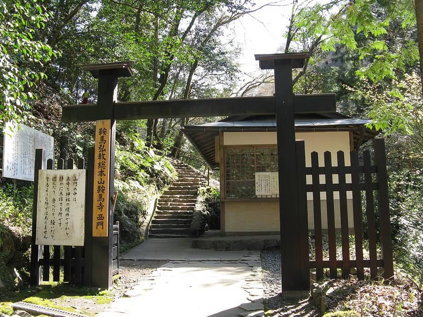
KENPEI・CC BY-SA 3.0・2009 年攝・Wikimedia Commons・西門（通往貴船）
本殿 → 魔王殿（Google Maps 步行） 魔王殿 → 貴船本宮 地圖：魔王殿
鞍馬・貴船一日手冊 鞍馬寺・貴船神社・下鴨神社2027/04/08（四）14 / 24
観貴船神社 本宮 水神の総本宮・水占みくじ
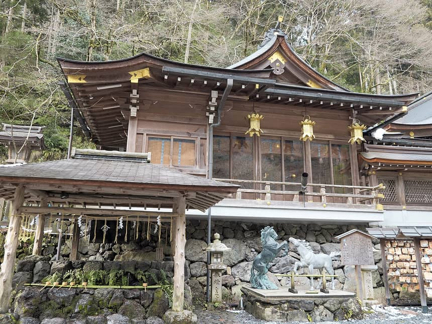
Hyppolyte de Saint-Rambert・CC BY 4.0・2024 年攝・Wikimedia Commons・本宮（1 月拍攝，有殘雪）
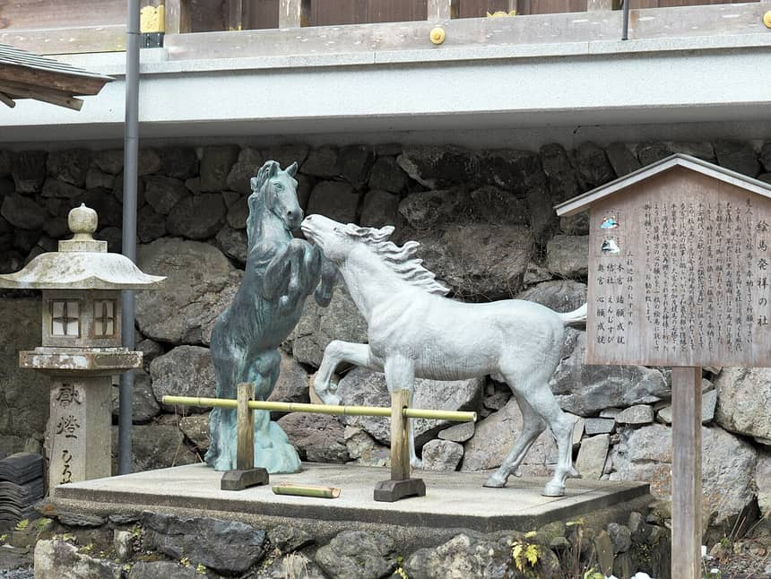
Hyppolyte de Saint-Rambert・CC BY 4.0・2024 年攝・Wikimedia Commons・本宮前的馬像
為什麼推薦
翻山下來的第一站，剛好在西門出口旁。貴船是水神的總本宮，參拜的重點是「三社詣」，順序是本宮 → 奧宮 → 結社；本宮可以在御神水試水占みくじ，也是領御朱印的地方。觀光價值 A，御朱印價值 A。
簡介
官網：祭祀萬物生命之源「水神」，是全國約 2,000 社水神的總本宮；白鳳六年（約 1,300 年前）已有社殿造替的記錄 ✅。本宮原在奧宮之地，因洪水流失，天喜三年（1055）遷到現址；現在的本宮在平成年間從基礎重建 ✅。社殿前石垣湧出的御神水是貴船山的湧水；把水占みくじ浮在靈泉上，字就會浮出來 ✅。
現場看什麼
- 御神水與石垣：官網說的「こんこんと溢れる」處
- 水占みくじ：白紙浮在水上，字浮現（初穂料 ¥200，非官網，⚠️）
- 黒馬・白馬像：本宮前的馬像
- 社殿與本宮前的石段：境內不大，山邊的小境內（omairi 2026/09/06 的感想 📷）
- 本宮邊的桂（御神木），說明牌見照片 ⚠️
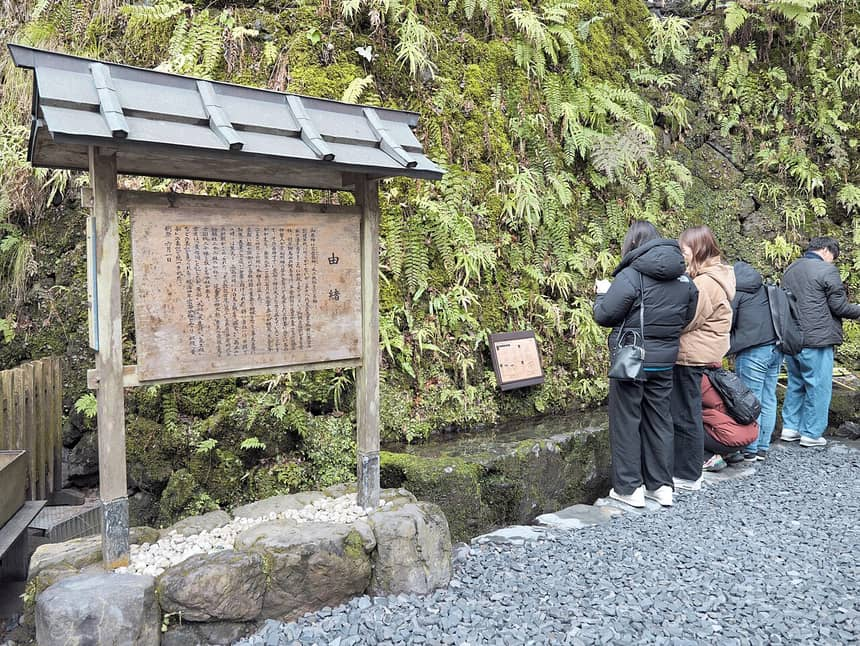
Hyppolyte de Saint-Rambert・CC BY 4.0・2024 年攝・Wikimedia Commons・本宮的水邊與說明牌
| 停留 | 30 分（參拜、水占、御朱印） |
|---|
| 離上一點 | 魔王殿 → 貴船神社 20 分 ✅；西門 → 本宮 1 分（Google ⚠️） |
|---|
| 開放 | 本宮參拜（含水占）6:00～20:00 是 5/1～11/30 的時間，年中無休、參拜無料 ✅。4 月的時間官網未載明；10/04 的「本宮參拜時間について」顯示神社會依日期變更 ✅。第三方資料寫 12/1～4/30 是 6:00～18:00 ⚠️ |
|---|
| 授與所 | 御守與御朱印等的授與所 9:00～17:00（ライトアップ期間中は延長）✅；御祈祷受付 9:00～15:00 ✅ |
|---|
| 4 月的祭典 | 4/1 春季御更衣祭、4/3 土解祭、4/29 昭和祭；4/8 沒有祭典 ✅ |
|---|
| 地址・電話 | 京都市左京区鞍馬貴船町 180・075-741-2016 ✅ |
|---|
御朱印
| 項目 | 內容 | 來源 |
|---|
| 種類 | 本宮御朱印（直書き）。「水神」二字取代一般的「奉拝」，有雙葉葵與菊花印 | 📷直書き 2026/09/21、2026/09/06、2026/08/27、2025/06/05；⚠️部落格 |
| 授與位置 | 本宮的授與所（官網把御朱印列在授與所受付時間下） | ✅ |
| 初穂料 | 金額有兩說，並列：舊部落格 ¥300；omairi 2026/07 前後的留言「貴船神社本宮は初穂料 500 円」 | ⚠️／📷 |
| 御朱印帳 | 官網授與品有「朱印帳」，價格與款式未載；部落格寫有期間限定款 | ✅存在・⚠️款式 |
| 推薦程度 | ★★★★★ 本宮「水神」是今天最值得收集的御朱印之一 | — |
西門 → 本宮（Google Maps 步行） 地圖：貴船神社 本宮 官網 參拝のご案内
鞍馬・貴船一日手冊 鞍馬寺・貴船神社・下鴨神社2027/04/08（四）15 / 24
観貴船神社 結社・奥宮 三社詣の後半
為什麼推薦
本宮往上游走約 15 分，沿著貴船川一路是森與水。結社是縁結びの社，奧宮是貴船神社創建的地方。官網寫「參拜三社」才算完整，所以主案走過去再回來。觀光價值 A（奧宮）與 B+（結社），御朱印價值：奧宮 B（書置き），結社沒找到獨立御朱印。
簡介（官網「境内案内」）
- 結社（中社）：祭神磐長姫命，縁結びで有名；傳說磐長姫因被瓊々杵命拒絕而留在此地，保佑人們的良緣；平安時代女歌人和泉式部為夫的變心來參拜，願望成真，從此稱「恋の宮」✅。
- 奥宮：貴船神社創建之地，森林環繞；玉依姫命乘坐的黃船，為了不被人看見用石頭包起來，至今長滿青苔，供在奧宮本殿旁（船形石）；本殿正下方有「龍穴」，被視為日本三大龍穴之一，沒有人可以看 ✅。
- 參拜順序：官網寫「本宮、奧宮、結社」。我們的走法是本宮 → 奧宮（途中經過結社不停）→ 回程停結社，等於官網的順序 ✅。
| 停留 | 奧宮 20 分、結社 10 分 |
|---|
| 離上一點 | 本宮 → 結社 8 分（Google）、結社 → 奧宮 7 分；本宮 → 奧宮 15 分・約 950 m ⚠️。omairi：「本宮から徒歩約 15 分」📷（2026/07/19） |
|---|
| 開放 | 官網沒有另列結社與奧宮的參拜時間；omairi 2026/07/19 的投稿者早上 8 點到本宮，在社務所開門前就參拜了結社與奧宮 📷 |
|---|
| 路況 | 沿府道 361 號與貴船川，路窄，有車；照片是 1 月拍的，4/8 不會有雪。奧宮附近有停車場（官網）✅ |
|---|
| 注意 | 川床（納涼床） 5 月起才開（ひろ文官網），4/8 看不到；之前的 Commons 照片（Nôryô-yuka）不使用 |
|---|
御朱印
| 項目 | 內容 | 來源 |
|---|
| 奥宮 | 書置きのみ（直書き不可）。紙本，通常御朱印 | 📷2025/06/05、2025/11/15、2026/07/19、2026/01/08 |
| 授與位置 | 未見明確記載：舊部落格寫「在本宮的授與所」；omairi 2026/07/19 的投稿者早到，先拜結社與奧宮、等社務所開門 → 推測在本宮領 | ⚠️・📷 |
| 初穂料 | 2026/01/08 的投稿：書置きのみ ¥300；約 2026/07 的留言：「與本宮同為 ¥500」。兩說並列，現場看標價 | 📷 |
| 結社 | 沒有找到結社獨立的御朱印 | ⚠️ |
| 推薦程度 | ★★★★☆ 奧宮的書置きが「貴船らしい」；結社是參拜重點但不另收御朱印 | — |
建議：在本宮 11:27 領御朱印時，先問授與所「奥宮の御朱印もここですか」。如果在本宮就能領，兩張一起拿，之後不必回頭。
本宮 → 奥宮（Google Maps 步行） 地圖：結社 地圖：奥宮
鞍馬・貴船一日手冊 鞍馬寺・貴船神社・下鴨神社2027/04/08（四）16 / 24
食午餐與休息 貴船 4 月沒有川床
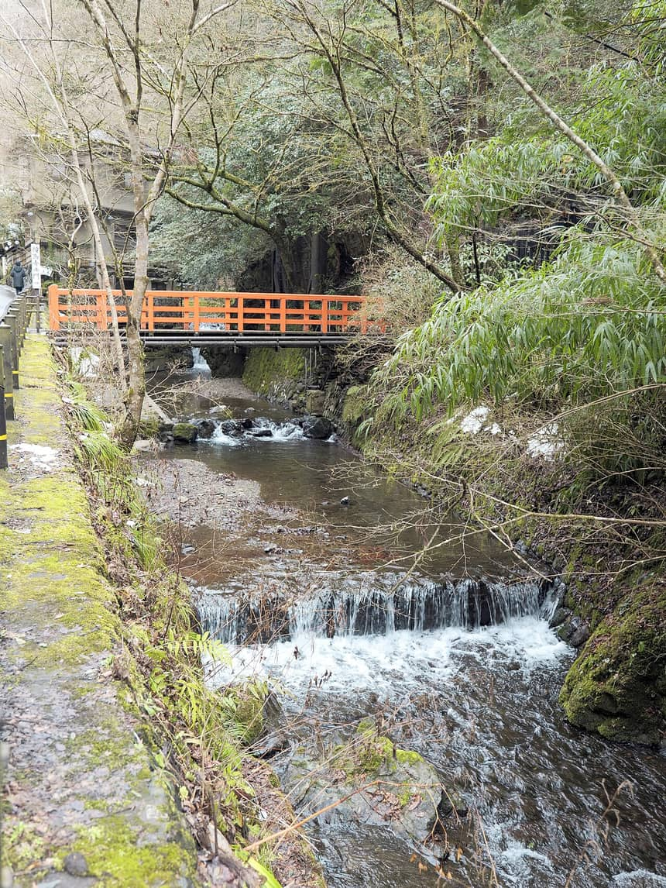
Hyppolyte de Saint-Rambert・CC BY 4.0・2024 年攝・Wikimedia Commons・貴船川（1 月拍攝）
4/8 的貴船沒有川床：ひろ文官網寫川床從 5 月到 9 月末，10 月中旬到 4 月是「囲炉裏」的室內用餐 ✅。這天午餐沒有一家我可以保證營業，下表照「官網確認的」與「二手資料」分開。
| 店・方案 | 時間・價格 | 4/8（週四） | 用途 | 來源 |
|---|
| 料理旅館 ひろ文（結社旁，電話 075-741-2147） | 午餐 11:00～15:00（最終入店 13:30）；秋冬（10 月中旬～4 月）在囲炉裏部屋用餐：季節の京会席 ¥10,890／14,520／20,570、牛しゃぶ ¥10,890、地鶏水たき ¥10,890，都要事前預約 | 可能不可用：官網「4月定休日：1日・8日・30日」，沒寫年份；2026 年 4/8 是週三，2027 年未公布 | 主選（要先電話確認 4/8 營業與預約；價格高） | ✅ |
| 貴船京紫陽（本宮北門內） | 食事處 11:00～16:00；餐點約 50 種（烏龍、蕎麥、湯豆腐） | 不定休，未知 | 備案 | ⚠️ |
| 貴船ひろや | 10 月～4 月 11:00～17:00（一休.com）；另有資料寫 11:00～14:00、17:00～19:00 | 不定休，未知 | 備案 | ⚠️ |
| 川床（ひろ文） | 5 月～9 月末（官網） | 不可用：4/8 還沒開 | — | ✅ |
| 川床（其他料理旅館） | 多數寫 5/1～9/30 | 不可用：4/8 還沒開 | — | ⚠️ |
| 自備午餐（最穩） | 出發前在京都駅或出町柳買飯糰、麵包；鞍馬寺轉法輪堂 1 樓「洗心亭」是免費休息所 | 洗心亭官網載明可用 | 備案（最穩） | ✅ |
| 鞍馬駅前的食堂 | 油屋食堂 9:00～16:30、雍州路 10:00～18:00（週二休）、くら満荘 11:00～21:00 不定休 | 主案不經過（午餐前已離開鞍馬） | 不用 | ⚠️ |
怎麼排：主案的午餐時段是 11:57～13:07，主選是 ひろ文（結社旁）。出發前一週電話或網路問 ひろ文（2 人、4/8、午餐）；若 4/8 休或不想花 ¥10,890，就改自備午餐：09:25 前後從纜車走上本殿、經過轉法輪堂時，用「洗心亭」休息吃點心，11:57 那一段改成在貴船休息與喝茶。貴船有沒有可以坐下來吃便當的地方，我沒有查到。我不能證明貴船其他店 4/8 有開，所以只有 ひろ文 有官網資料，其他列備案。
休息點
| 地點 | 設施 | 來源 |
|---|
| 轉法輪堂（多宝塔駅 → 本殿的路上） | 一樓「洗心亭」免費休息所與畫廊 | ✅ |
| 鞍馬山內各處 | 洗手間；山門前的鳥樞沙摩明王殿，本殿下方也有 | ✅ |
| 貴船神社 本宮 | 授與所 9:00～17:00；洗手間與茶屋狀況未載明 | ✅／⚠️ |
一休.com、食べログ等第三方的營業時間只當參考，不是 ✅。
鞍馬・貴船一日手冊 鞍馬寺・貴船神社・下鴨神社2027/04/08（四）17 / 24
観下鴨神社・河合神社 回程順路・糺の森
為什麼推薦
這是不在你指定目的地內的順路點，行程裡「第一個可砍」。優點是從出町柳走 12 分就到，穿過糺の森的參道很平，是爬完山以後最輕鬆的一段；河合神社的美麗祈願也有特色。觀光價值 A，御朱印價值 A。
簡介
賀茂御祖神社，通稱下鴨神社。西本殿祭祀賀茂建角身命（京都開拓之神），東本殿祭祀其御子神玉依媛命 ✅。河合神社是境內的摂社，祭神玉依姫命，被稱為「日本第一美麗神」，授與手鏡形的鏡絵馬與鏡みくじ（¥500）✅。河合神社北側的糺の森裡，有鴨長明晚年居所「方丈の庵」的復原展示（神宮寺旧跡的拝観區）✅。世界遺產的身分官網首頁沒寫，不當作官方資料 ⚠️。
現場看什麼
- 糺の森的參道，約 12 分從出町柳走到
- 楼門與本殿
- 河合神社的鏡絵馬：用自己的化妝品在手鏡形絵馬上畫臉
- 相生社（縁結び）、印璽社（契約）、井上社（お祓い）、言社（干支のお社）等境內小社 ✅
| 停留 | 63 分（15:17～16:20），河合神社要在 16:30 前離開 |
|---|
| 離上一點 | 出町柳駅 → 下鴨神社 徒步 12 分 ✅（Google 7～10 分 ⚠️） |
|---|
| 開放 | 楼門內 6:30 開、17:00 閉；河合社 6:30 開、16:30 閉；神事時可能變更；定休日なし ✅ |
|---|
| 特別拝観 | 大炊殿・神宮寺旧跡等 10:00～16:00、¥1,000；官網寫對象是團體 ✅，本行程不排 |
|---|
| 地址・電話 | 京都市左京区下鴨泉川町 59・075-781-0010 ✅ |
|---|
御朱印
| 項目 | 內容 | 來源 |
|---|
| 下鴨神社 | 直書きの投稿多數（2026/10/01、2026/09/20、2026/02/09）；限定：葵祭（5 月，2025/05/15）、みたらし祭（7 月）書置き，都不在 4 月 | 📷 |
| 河合神社 | 直書き（2026/08/27、2026/06/18）；也有書置きの投稿（2026/08/15） | 📷 |
| 授與時間・初穂料 | 官網未載明。有投稿寫「受付終了直前に間に合いました」，河合神社要早點去 | ⚠️・📷 |
| 推薦程度 | ★★★★☆（下鴨）・★★★☆☆（河合） 但「值得收集」與「值得參觀」分開看：下鴨的御朱印是常規版 | — |
放不放進行程：如果前面延誤，下鴨神社就是第一個被砍的（第 20 頁）。如果要去，走法是出町柳 → 糺の森 → 下鴨本殿 → 河合神社（16:30 閉）→ 原路回出町柳搭京阪。也可以從「下鴨神社前」搭市バス 4 或 205 回京都駅，官網寫這兩個系統直達京都駅 ✅，時間我沒有查 ⚠️。
出町柳 → 下鴨神社（Google Maps 步行） 地圖：河合神社
鞍馬・貴船一日手冊 鞍馬寺・貴船神社・下鴨神社2027/04/08（四）18 / 24
印今日御朱印攻略 基本 3 張、最多 5 張
| 寺社 | 參觀 | 收集 | 御朱印 | 授與位置 | 授與時間 | 取得方式 | 備註 | 推薦 |
|---|
| 鞍馬寺 本殿金堂 | S | A | 「尊天」，寅の日有印 | 本殿金堂內納經所 | 官網未載；9:00～16:00 ⚠️ | 直書き | ¥300 ⚠️；御朱印帳 ¥2,000／¥3,000 兩說 | ★★★★★ |
| 魔王殿・西門 | S | C | 未見獨立御朱印 | — | — | — | 值得走，不用找御朱印 | — |
| 貴船神社 本宮 | A | A | 「水神」 | 本宮授與所 | 9:00～17:00 ✅ | 直書き | ¥300／¥500 並列 ⚠️／📷 | ★★★★★ |
| 貴船神社 奥宮 | A | B | 通常版 | 本宮授與所（推測） | 同上 ⚠️ | 書置きのみ | 先在本宮問清楚 | ★★★★☆ |
| 貴船神社 結社 | B+ | C | 未見獨立御朱印 | — | — | — | 縁結びの社，順路拜 | — |
| 下鴨神社 | A | A | 通常版（直書き） | 境內 | 未載明 ⚠️ | 直書き | 限定版不在 4 月 | ★★★★☆ |
| 河合神社 | B+ | B | 通常版 | 境內（河合社） | 未載明；河合社 16:30 閉 ✅ | 直書き為主 | 早去 | ★★★☆☆ |
今天預計收幾張
- 基本 3 張：鞍馬寺、貴船本宮、貴船奧宮
- 最多 5 張：加下鴨神社與河合神社；由岐神社（3 種書置き）這次不去
- 不必為了多收而繞路：魔王殿、結社沒有獨立御朱印，不另找
書置きの準備
- 貴船奧宮是書置き：帶透明資料夾與紙膠水或雙面膠
- 日期印的墨容易沾到別張（omairi 的留言 📷）
- 直書き的御朱印帳：鞍馬寺、貴船本宮、下鴨、河合可寫進帳；不要把書置きの紙夾在帳外
- 零錢：¥100、¥500 硬幣各備幾枚
御朱印排程（照主案時間）
| 時間 | 地點 | 領什麼 | 當天最晚 |
|---|
| 09:32～10:02 | 鞍馬寺 本殿金堂 | 「尊天」直書き | 16:00 ⚠️ |
| 11:27～11:57 | 貴船本宮 | 「水神」直書き；奧宮書置き（先問位置） | 17:00 ✅ |
| 15:17～16:20 | 下鴨神社・河合神社 | 直書き 2 張 | 未載明；河合社 16:30 閉 ✅ |
「景點還開著，但御朱印可能已結束」的提醒
| 地點 | 景點開放 | 御朱印 | 風險 |
|---|
| 鞍馬寺 | 本殿 16:15 閉 ✅ | 納經所 16:00 ⚠️ | 15:50 才到可能領不到 |
| 貴船神社 | 本宮 4 月時間未載明；5/1～11/30 到 20:00 ✅ | 授與所 9:00～17:00 ✅ | 17:00 後只能參拜，領不到 |
| 下鴨神社 | 楼門內 17:00 閉 ✅ | 未載明 ⚠️ | 16:30 前領最保險 |
| 河合神社 | 河合社 16:30 閉 ✅ | 未載明；有「受付終了直前」的投稿 📷 | 最容易先結束 |
期間限定：「京都 洛北の社寺＆えいでん 春の特別ご朱印めぐり」2026 年是 2/4～4/30，參加社寺含下鴨神社、貴船神社（也含由岐神社），叡電 4 站（出町柳、修学院、貴船口、鞍馬）賣限定繪馬形紀念印。2027 年是否舉辦未公布；若舉辦，4/8 在期間內。
鞍馬・貴船一日手冊 鞍馬寺・貴船神社・下鴨神社2027/04/08（四）19 / 24
行一日時間軸與費用 時間由「前一段結束＋移動時間」算出
07:40京都 → 東福寺 JR奈良線（宇治行 8番線）（JR 3 分） 緩衝 0 分
07:58東福寺 → 出町柳 京阪（出町柳行）（京阪 15 分） 緩衝 15 分
08:24出町柳 → 鞍馬 叡電鞍馬線（3番線）（叡電 31 分） 緩衝 11 分
09:20山門駅 → 多宝塔駅 鞍馬山ケーブル（20 分間隔，¥200）（ケーブル 2 分） 緩衝 18 分
09:32本殿金堂（金剛床・展望・御朱印）（30 分）
10:04霊宝殿（任意）（20 分）
10:52魔王殿（15 分）
11:27貴船神社 本宮（水占・御朱印）（30 分）
11:57午餐（70 分）
13:22奥宮（20 分）
13:49結社（10 分）
14:11貴船バス停で巴士33待ち（班次未取得，暫估）（10 分）
14:21貴船 → 貴船口 京都バス33（巴士 7 分）
14:36貴船口 → 出町柳 叡電（きらら，週四可搭）（叡電 29 分） 緩衝 8 分
15:17下鴨神社・河合神社・糺の森（63 分）
16:40出町柳 → 七条 京阪（京阪 7 分） 緩衝 8 分
到站時間 17:00 回京都駅。叡電、京阪的出發時間是時刻表固定班次 ✅，其餘由步行與停留推算 ⚠️。
費用總覽（每人）
| 項目 | 金額 | 來源 |
|---|
| JR 京都 → 東福寺 | ¥150 | ⚠️ |
| 京阪 東福寺 → 出町柳 | ¥300 | ✅ |
| 叡電 出町柳 → 鞍馬 | ¥470 | ✅ |
| 京都巴士 33 貴船 → 貴船口 | 約 ¥230 | ⚠️ |
| 叡電 貴船口 → 出町柳 | ¥470 | ✅ |
| 京阪 出町柳 → 七条 | ¥300 | ✅ |
| 交通小計 | ¥1,920 | — |
| 鞍馬寺 愛山費 | ¥500 | ✅ |
| 鞍馬山ケーブル 上行（寄進） | ¥200 | ✅ |
| 霊宝殿（任意） | ¥200 | ✅ |
| 御朱印（基本 3 張） | 約 ¥900～1,300 | ⚠️ |
| 下鴨・河合神社 御朱印 | 未載明 | — |
| 合計（不含午餐） | 每人 | 2 人 |
|---|
| 低：交通＋愛山費＋纜車＋基本 3 張御朱印（¥900） | ¥3,520 | ¥7,040 |
| 高：加霊宝殿與較高的初穂料（¥1,300） | ¥4,120 | ¥8,240 |
| 午餐 | 金額 | 說明 |
|---|
| 自備（京都駅或出町柳買） | 約 ¥500～1,000 | 我的估算 ⚠️ |
| ひろ文 季節の京会席 | ¥10,890～20,570 | 官網 ✅；4/8 公休與否未公布 |
| 貴船其他店 | 未載明 | ⚠️ |
單買 vs 套票：交通單買 ¥1,920，一日券 ¥2,100 不划算（第 7 頁）；纜車 ¥200 是寄進，不在一日券內。御朱印的初穂料是舊部落格與 omairi 的數字，現場以標價為準。
御朱印如果兩個人都要收，金額乘 2；一本帳共用就不乘。
鞍馬・貴船一日手冊 鞍馬寺・貴船神社・下鴨神社2027/04/08（四）20 / 24
基雨天備案與刪減方案
雨天（或山路狀況不明）
- 2026/6/27 的豪雨公告：鞍馬寺與貴船神社照常，木の根道可通行，叡電正常，京都巴士 32、52 改道 ✅。所以大雨時主要風險是巴士與山路，不是叡電。
- 小雨：照主案走，木の根道改慢走，穿防滑鞋，雨衣比雨傘好。
- 大雨或路況不明：放棄翻山（主案已經是纜車上山，這時改成纜車也下山）。仁王門 → 纜車上（8:40 起，每 20 分，¥200）→ 本殿金堂 → 纜車下 → 鞍馬駅搭叡電到貴船口（鞍馬 → 貴船口 2 分 ✅）→ 巴士 33 或步行 30 分到貴船 ✅。霊宝殿是室內，適合雨天。
- 雨天的順序：鞍馬寺（纜車）→ 貴船本宮 → 奧宮（沿溪平路，雨中也走得到）→ 叡電回出町柳；下鴨神社的糺の森在雨中也好走，但可直接略過。
| 雨天版（暫估） | 時間 | 備註 |
|---|
| 鞍馬駅 → 仁王門 → 纜車上 | 08:58～09:22 | 纜車 8:40 起，主案就是搭 09:20 班 ✅ |
| 本殿金堂、御朱印、霊宝殿 | 09:32～10:30 | 10 分走路到本殿 ✅ |
| 纜車下 → 鞍馬駅 → 叡電到貴船口 | 10:45～11:15 | 叡電鞍馬發 :04 :19 :34 :49 ✅ |
| 巴士 33 → 貴船 本宮、午餐、奧宮 | 11:30～14:30 | 巴士班次 ⚠️ |
S／A／B／C 分級
| 級 | 項目 | 說明 |
|---|
| S | 鞍馬寺 本殿金堂與金剛床；奧の院・木の根道；貴船本宮 | 最後才刪 |
| A | 貴船奧宮；下鴨神社 | 依序刪：下鴨 → 奧宮 |
| B | 霊宝殿；貴船結社；河合神社 | 先刪 |
| C | 午餐的停留時間（60 分）、回程搭きらら | 可以縮短 |
情境對照
| 情境 | 做法 | 結果 |
|---|
| 晚出發 30 分（叡電 08:45，鞍馬 09:16） | 纜車改搭 09:40 班，刪霊宝殿 | 其他時間不變 |
| 晚出發 1 小時（叡電 09:00 → 09:31 鞍馬） | 纜車改搭 10:00 班，刪霊宝殿、縮短午餐為 40 分、不去下鴨神社 | 14:51 叡電仍趕得上 |
| 授與所排隊 15 分 | 貴船本宮先領兩張（本宮、奧宮），午餐縮 15 分 | 14:36 的叡電仍趕得上 |
| 叡電或巴士延誤 | 貴船巴士排太長就走下山 30 分 ✅，搭 14:51 或 15:06 的叡電 | 下鴨神社縮為 30 分或略過 |
| 景點臨時關閉（山路） | 改雨天版，只留 S 級 | 見上表 |
| 整天都順利 | 多留時間在奧宮與鞍馬寺 | 下鴨神社可延長到 17:00 閉門前 |
基出發前必看與 Checklist
| 項目 | 提醒 | 來源 |
|---|
| 開放時間 | 鞍馬寺本殿 9:00～16:15；貴船授與所 9:00～17:00；下鴨神社 17:00、河合社 16:30 閉；霊宝殿 9:00～16:00 | ✅ |
| 最晚時間 | 纜車上行末班 16:20（下行 16:25，主案不搭）；叡電貴船口末班 23:06、出町柳往鞍馬末班 22:30 | ✅ |
| 御朱印時間 | 鞍馬寺官網未載，部落格寫 16:00（另一說 16:30）；上午就領完 | ⚠️ |
| 徒步路段爬升 | 多宝塔駅 → 本殿 上 59 m；魔王殿 → 西門 下 132 m（Google）；纜車替你省掉九十九折 | ⚠️ |
| 鞋 | 防滑的運動鞋；木の根道雨後濕滑 | ⚠️ |
| 天氣・服裝 | 山內比市區涼，帶一件外套與雨具；4 月的氣溫與櫻花時機我沒有查證，請看出發前預報 | ⚠️ |
| 提早多久到 | 07:40 發的 JR 提早 5～10 分到京都駅 8 番線；叡電 08:24 在出町柳 3 番線 | ✅ |
| 行李 | 山路帶小背包，大件寄放在飯店；鞍馬與貴船沒有查到寄物櫃 | ⚠️ |
旅行 Checklist 勾選只存在這台裝置的瀏覽器裡
電話與搜尋關鍵字
| 地點 | 電話 | 來源 |
|---|
| 鞍馬寺 寺務所 | 075-741-2003 | ✅ |
| 貴船神社 | 075-741-2016 | ✅ |
| 下鴨神社 | 075-781-0010 | ✅ |
| 料理旅館 ひろ文 | 075-741-2147 | ✅ |
Google Maps 搜尋：京都駅、東福寺駅 京阪、出町柳駅、鞍馬駅、鞍馬寺 仁王門、鞍馬山ケーブル 山門駅、鞍馬山ケーブル 多宝塔駅、鞍馬寺 本殿金堂、鞍馬寺 魔王殿、鞍馬寺 西門、貴船神社 本宮、貴船神社 結社、貴船神社 奥宮、貴船口駅、下鴨神社、河合神社。
鞍馬・貴船一日手冊 鞍馬寺・貴船神社・下鴨神社2027/04/08（四）22 / 24
基資料來源
查證日 2026/10/05。官方頁面以瀏覽器實際開啟為準；搜尋引擎摘要只用來找網址，不標 ✅。叡電與京阪的時刻表是官網 PDF，京阪 PDF 文字抽取不全，時刻看渲染後的畫面。JR 時刻來自 JR 西日本「駅の時刻表」，2026/10/08（木）。
鞍馬・貴船一日手冊 鞍馬寺・貴船神社・下鴨神社2027/04/08（四）23 / 24
基照片授權與資料處理
照片授權（全部來自 Wikimedia Commons，已縮為寬 1000 px）
| 用在 | 檔名 | 作者 | 授權 | Commons |
|---|
| 鞍馬寺 仁王門 | Kurama-Dera (Kyoto Sakyo-ku) gate Niomon hdsr S5 08.jpg | Hyppolyte de Saint-Rambert | CC BY 4.0 | 連結 |
| 阿吽の虎 | Kurama-Dera (Kyoto Sakyo-ku) gate Niomon hdsr S5 03.jpg | Hyppolyte de Saint-Rambert | CC BY 4.0 | 連結 |
| 本殿金堂と金剛床 | 鞍馬寺本殿金堂 Main hall, Kurama-dera 2011.8.28 - panoramio.jpg | Nankou Oronain (as36… | CC BY-SA 3.0 | 連結 |
| 木の根道 | Kurama-dera kinonemichi.jpg | KENPEI | CC BY-SA 3.0 | 連結 |
| 本殿附近の展望 | Kurama-Dera (Kyoto Sakyo-ku) Temple hdsr S5 17.jpg | Hyppolyte de Saint-Rambert | CC BY 4.0 | 連結 |
| 鞍馬寺の石段 | Kurama-Dera (Kyoto Sakyo-ku) Temple hdsr S5 25.jpg | Hyppolyte de Saint-Rambert | CC BY 4.0 | 連結 |
| 魔王殿 | Kurama-dera Okunoin Maoden.jpg | KENPEI | CC BY-SA 3.0 | 連結 |
| 西門 | Kurama-dera nishimon.jpg | KENPEI | CC BY-SA 3.0 | 連結 |
| 鞍馬駅 | Kurama station sign and Tengus 20200530.jpg | Hahifuheho | CC0 | 連結 |
| 貴船神社 本宮 | Kifune-jinja (Kyoto Sakyo-ku) Hongū hdsr S5 02.jpg | Hyppolyte de Saint-Rambert | CC BY 4.0 | 連結 |
| 本宮の馬像 | Kifune-jinja (Kyoto Sakyo-ku) Hongū hdsr S5 04.jpg | Hyppolyte de Saint-Rambert | CC BY 4.0 | 連結 |
| 本宮の水邊 | Kifune-jinja (Kyoto Sakyo-ku) Hongū hdsr S5 18.jpg | Hyppolyte de Saint-Rambert | CC BY 4.0 | 連結 |
| 奥宮 本殿 | Kifune-jinja Okumiya honden.jpg | KENPEI | CC BY-SA 3.0 | 連結 |
| 結社 | Kifune-jinja Yuinoyashiro1.jpg | KENPEI | CC BY-SA 3.0 | 連結 |
| 奥宮の船形石 | Kifune-jinja Yuinoyashiro amenoiwafune.jpg | KENPEI | CC BY-SA 3.0 | 連結 |
| 貴船川 | Kibune (Kyoto Sakyo-ku) Kibune River hdsr S5 01.jpg | Hyppolyte de Saint-Rambert | CC BY 4.0 | 連結 |
| 叡電鞍馬線 | Eizan Kurama Line 2024 4.jpg | Smiley.toerist | CC BY-SA 4.0 | 連結 |
| きらら（900 系） | Eizan Electric Railway series Deo 900 near Ichihara Station (Kyoto).jpg | Norihiro Kataoka | CC BY-SA 2.0 | 連結 |
| 下鴨神社 楼門 | Kyoto Shimogamo-jinja Romon 3.jpg | Zairon | CC BY-SA 4.0 | 連結 |
| 糺の森 | Shimogamo Forest (Tadasu no Mori).jpg | Cun Cun | CC BY-SA 4.0 | 連結 |
| 河合神社 | Kyoto Shimogamo-jinja Kawai-jinja 03.jpg | Zairon | CC BY-SA 4.0 | 連結 |
每張照片的圖說都附作者、授權、攝影年份與 Commons 頁面連結。貴船與鞍馬的照片有不少是 1 月拍的，有殘雪，4/8 的樹葉與景色會不同；2007～2012 年的照片與現況也可能有差。每一張都目視確認過內容與地點，貴船的檔案以「Kyoto Sakyo-ku」或 Kyoto 的 Commons 說明為準，沒有使用同名的其他縣市神社。
地圖
Google Maps 截圖，地圖資料 ©2026 Google，截取日期 2026/10/05，僅作個人行程參考。示意圖為自製，非地理比例。步行時間是 Google 的估算，不含參拜與停留。
資料是怎麼查的
- 官方頁面用瀏覽器實際開啟，存下全文再讀；叡電與京阪的時刻表、運賃是官網 PDF 或圖片。
- 御朱印的授與方式（直書き／書置き）與日期，來自 omairi.club 的投稿，用 Claude in Chrome 讀取，標 📷 並附日期。
- 舊部落格、轉乘網站、Google Maps 與一休.com 只當輔助，標 ⚠️。
- 所有「我的推算」「我的估算」都標 ⚠️，沒有標 ✅ 的數字都不是官方原文。
鞍馬・貴船一日手冊 鞍馬寺・貴船神社・下鴨神社2027/04/08（四）24 / 24
基待確認事項 出發前一週再核對一次
| # | 要確認的事 | 現在的狀況 | 去哪裡確認 |
|---|
| 1 | 叡電、京阪、JR 2027 年 4 月的時刻 | 現用 2026/8/22 版（叡電、京阪）與 2026/10/03 改正的 JR；主案 08:24、07:58、07:40 ⚠️ | 叡電「時刻表」、京阪各站時刻表、JR 西日本駅の時刻表 |
| 2 | 叡電きらら 4/8 當天的運行 | 只知道 ◆ 的班次週三、週四不開；2027 年是否同樣未公布 ✅ | 叡電 展望列車時刻表 |
| 3 | 貴船本宮 4 月的參拜時間與授與所 | 官網只寫 5/1～11/30 為 6:00～20:00；授與所 9:00～17:00 但「時期によって変更」 ✅ | 貴船神社「お知らせ」、075-741-2016 |
| 4 | 貴船本宮・奧宮的初穂料與奧宮御朱印的授與位置 | ¥300／¥500 兩說；奧宮在哪裡領未見明確記載 ⚠️ | 現場授與所、omairi 新投稿 |
| 5 | 鞍馬寺的御朱印時間、御朱印帳價格；纜車 09:20 班與付款方式 | 御朱印 16:00／16:30、帳 ¥2,000／¥3,000 是第三方資料；纜車每 20 分是推算，付款方式官網未載 ⚠️ | 鞍馬寺 075-741-2003 |
| 6 | 下鴨神社與河合神社的御朱印授與時間與初穂料 | 官網未載 ⚠️ | 下鴨神社 075-781-0010 |
| 7 | 午餐：ひろ文 4/8 的營業與預約；其他店 | 官網 4 月定休日列 1・8・30 日（年份未載）✅ | ひろ文 075-741-2147 |
| 8 | 京都巴士 33 的時刻與運賃 | ¥230 為推算；時刻未取得 ⚠️ | 京都巴士官網「時刻表検索」、京都バスナビ |
| 9 | 鞍馬山ケーブルの 2027 年 4 月檢修日；山路與天候 | 官網只列 2026 年 7～10 月 ✅ | 鞍馬寺「お知らせ」 |
| 10 | 「春の特別ご朱印めぐり」2027 年是否舉辦 | 2026 年為 2/4～4/30；2027 年未公布 ⚠️ | 叡電官網新聞、各社寺 |
| 11 | 鞍馬寺 花供養（4 月中旬 8 天）的日程 | 官網寫「4 月中旬の 8 日間」，2027 日期未公布 ✅ | 鞍馬寺 年中行事 |
| 12 | 京阪各班的停靠站、東福寺與出町柳的轉乘時間 | 只看過時刻表與 Yahoo 的 15 分 ⚠️ | 京阪時刻表、現場站內看板 |
| 13 | 水占みくじ的初穂料、鞍馬寺山門的入山時間 | 水占 ¥200 是第三方資料；入山時間官網未載明 ⚠️ | 貴船神社授與所、鞍馬寺 075-741-2003 |
| 14 | 兩張 ¥2,100 一日券 2027 年版 | 有效期只到 2027/3/31；此行不買，不影響行程 ✅ | 京阪官網 |